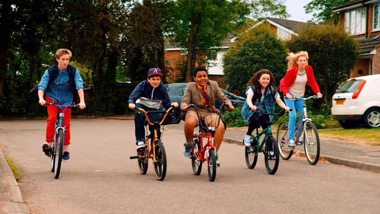

Karl
Karl hails from the Antipodes but, despite living here for the last 44 years, finds some of his Kiwi traits remain – he still cannot fly. As an ambition, flying doesn’t come top of the list. What is more important is the desire to be effective (in a good way) in the lives of people with whom he shares space. That ‘space’ might be his home, his neighbourhood, his larger community. That’s the primary motive behind most of his life choices. One of which led him to co-founding the Old Schoolhouse Community Project.
After graduating from university Karl worked in the family double glazing business. His spare time was spent doing voluntary youth work. It was this work that led him to taking permanent employment as a Community Worker with Catholic Social Services (now named the Nugent Care Society). Following his time there he trained for, and was ordained as, a Catholic priest. He served in various parishes for fifteen years but is currently away from active ministry. This has allowed him to pursue the development of the Old Schoolhouse.
As the manager of the Project, he is delighted that the building was saved from demolition to become a noted place of meeting for a variety of groups and individuals.
Paul
Paul has been involved with The Old Schoolhouse since April 2003 when managing a team of Neighbourhood wardens, they were amongst the first group of tenants. After 4 years he left to develop the first Neighbourhood warden scheme in Warrington. He still did voluntary work at The Old Schoolhouse and was also a trustee. Funding was secured for a member of staff for 12 months so he decided to take a chance and apply for the job, the rest as they say is history.
He has three lovely ladies in his life, his lovely wife and two wonderful daughters. He likes to play golf, read and go on holiday!! He is also a member of a Ukulele group who rehearse at The Old Schoolhouse and put on shows for care homes, women’s groups etc.
He enjoys his time at the Old Schoolhouse so much that he doesn’t think of it as a job, but as getting paid for enjoying himself. Every day is different, meeting lots of people from all walks of life.
Chris
Chris joined the Old Schoolhouse staff in September of 2016, having spent the previous long years teaching French and Spanish to mostly sceptical pupils in a large Liverpool secondary school. He is a qualified yoga teacher, as well as a hopelessly unqualified gardener and handyman.
He is a Huyton native and grew up just a few minutes away. He still lives in the borough with his wife and their young son.
An aspirant writer and musician, as yet, Chris’ genius remains tragically under appreciated by the wider public.
His role at the Schoolhouse is Project development worker. If you have any ideas of services or schemes that you’d like us to look into running then please speak to him.
Dave
Dave recently joined the Old School House staff team as a Chef/ Project Officer. His two main career paths in life have been catering and homelessness. One has given him joy of food, which he hopes to share through various projects in the centre. And the other, homelessness, has given him vast experience on the effects of social isolation, something we would like to address in the centre. This is an exciting time for The Old Schoolhouse as we hope to develop the catering output and options within the project, with Dave at the centre of our culinary exploits.
Staff and Trustees would like the centre to be a place of ‘wellbeing’, and as part of this ideal Dave sees food as a great way of bringing people together to share a meal. He believes homemade food should be encouraged as even the most basic recipes prove to be everlasting.
Please seek him out if you have any views, ideas and recipes that you would like to share. He is also happy to be contacted for any cooking related advice.
Dave’s advice: Keep Cooking!!
Ancillary Staff
We have three members of ancillary staff: Jean and Moe who keep everything clean and tidy and Christine who works with the team to promote the Schoolhouse and all that happens here.
Our Volunteers

Our volunteers are a group of committed individuals from the local community who help with the day to day running of the project. they are always ready to welcome with a smile and a friendly hello. Without them we would be lost!
We are also very grateful to our Trustees who volunteer their time to help maintain the life and soul of the schoolhouse.